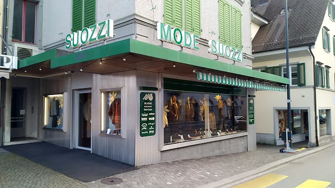
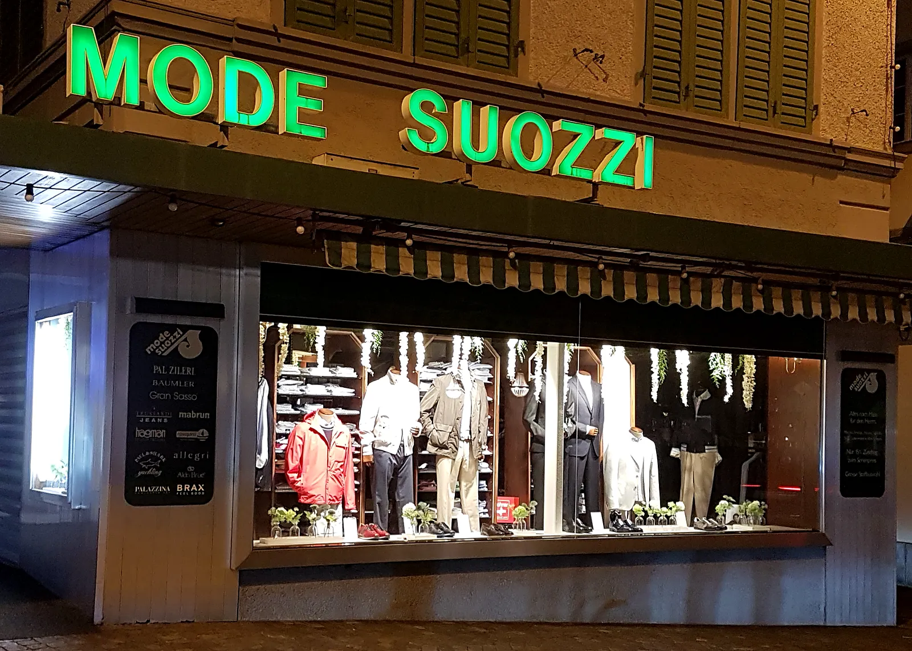

Herbst / Winter
Jetzt im Laden
- AnzügeTextura
- HemdenBolzonella 1934
- JeansTrussardi
- SchuheCalpierre
Seit 55 Jahren am Sternenplatz
Anzüge, Hemden, Strick und Schuhe von ausgewählten Marken – mit persönlicher Beratung im Familiengeschäft.

Unser Sortiment wird jahreszeitengetreu angepasst. Im Laden finden Sie die aktuelle Kollektion in Ihrer Grösse – und jemanden, der sich Zeit für Sie nimmt.
Jetzt im Laden
Ab Frühling
Vorwiegend italienische Häuser, mit denen wir seit Jahren zusammenarbeiten.

Seit 55 Jahren kleiden wir Männer aus Uster und dem Zürcher Oberland ein – an der Zentralstrasse 1, direkt am Sternenplatz.
Als Familiengeschäft setzen wir auf italienische Qualität, ehrliche Beratung und Kundinnen und Kunden, die immer wieder kommen.
„Wir freuen uns auf Ihren Besuch!“
Schauen Sie sich schon vorab in unserem Laden um: ziehen, um sich umzusehen – klicken, um weiterzugehen.
Sie finden uns im Zentrum von Uster, wenige Gehminuten vom Bahnhof.
Mode Suozzi
Zentralstrasse 1
8610 Uster
Telefon +41 (0) 44 940 87 21
Fax +41 (0) 44 940 89 80
E-Mail shop@modesuozzi.ch
| Montag – Freitag | 09:00 – 12:00 14:00 – 18:30 |
|---|---|
| Samstag | 08:30 – 16:00 |
| Sonntag | geschlossen |
